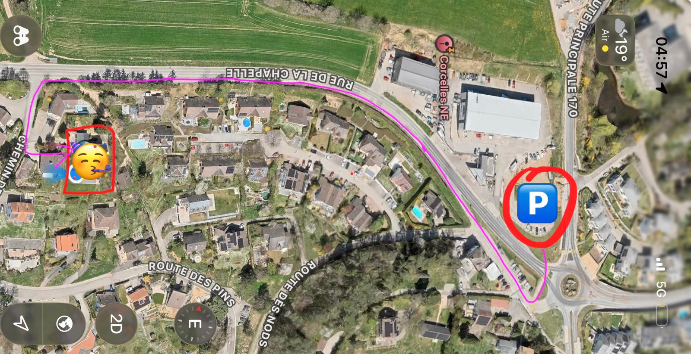

09h00 – 10h00
🧘 Pilates
📍 Chemin de Closel 3
- Tenue confortable recommandée.
- Aucun matériel n'est nécessaire, les tapis sont fournis.
- Possibilité de se doucher sur place après le cours.
- Animé par Élodie Joly
Vous êtes invité·e à
Cher·ère ami·e,
Nous fêtons ensemble 10, 20, 40, 50 et 80 ans — une seule occasion, six personnes à célébrer, et vous au milieu.
Samedi 29 août — une journée entière de festival. Venez pour tout, ou juste pour un moment.
📍 Chemin de Closel 3
📍 Chemin de Closel 3
📍 Chemin de Closel 3
📍 Tennis Club de Colombier
📍 Chemin de Closel 3
📍 Départ : parking du Restaurant l'Aubier, Montézillon
📍 Chemin de Closel 3 · animé par Les Bijoux de Ludi
Merci de répondre avant le 9 août 2026. Vous pourrez revenir modifier votre réponse à tout moment depuis n'importe quel appareil.
Pour répondre, créez un petit accès en deux clics (juste pour pouvoir revenir modifier votre réponse plus tard depuis n'importe quel appareil). Si vous l'avez déjà fait, connectez-vous.
Envie de jouer le jeu ? N'hésite pas à adopter un look de festivalier ou une tenue bohème !
Mais surtout… viens comme tu es. 💜 Le plus important est que tu te sentes bien.
Merci de vous parquer sur les places situées au niveau de la station-service, juste après le rond-point. Des panneaux vous indiqueront les emplacements réservés (places des véhicules d'exposition).

Quatre places sont également disponibles à proximité immédiate de la maison pour les personnes ayant des difficultés à marcher. N'hésitez pas à me prévenir si vous souhaitez en réserver une.
En train : gare de Corcelles-Peseux (5 min à pied). En voiture : suivez les indications parking ci-dessus, et covoiturez si possible.
Répondez dans le formulaire ou contactez-nous directement — on vous rappelle.